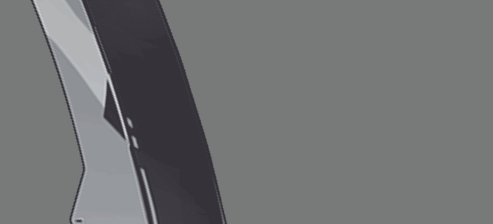
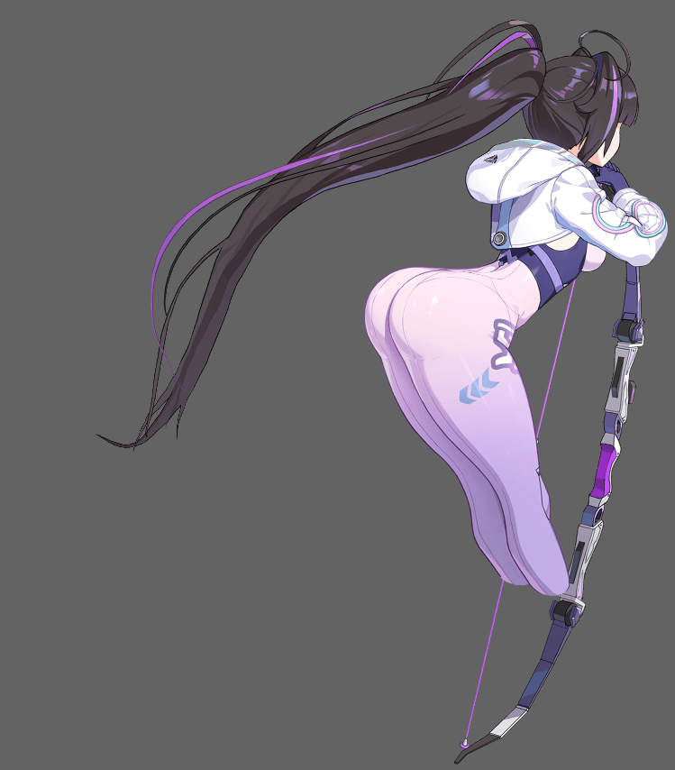
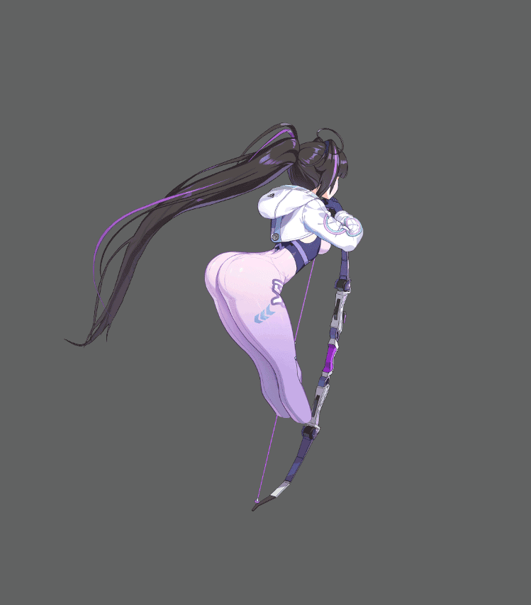
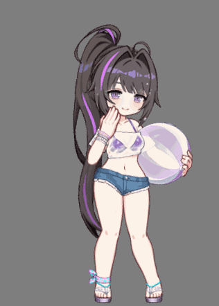
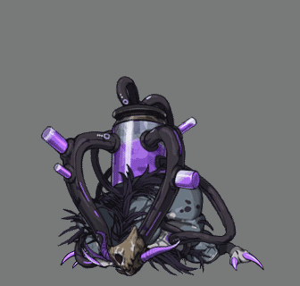

01PROJECT
PROJECT
Chaos Zero
Nightmare
Character Motion · In-game Animation · Monster Animation
Spine 2D





캐릭터의 자세, 원화에서 나올 수 있는 매력을 우선으로 작업했습니다. 강조할 수 있는 곳에 집중하고, 루프 되는 곳에서 자연스러울 수 있도록 제작했습니다.
ROLEIn-game Animation